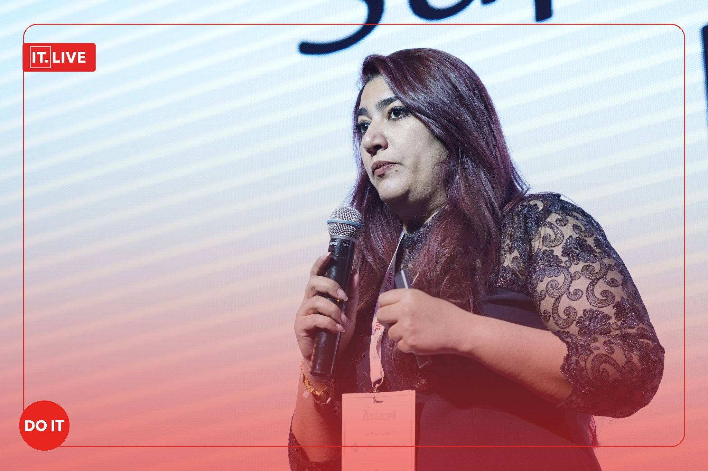
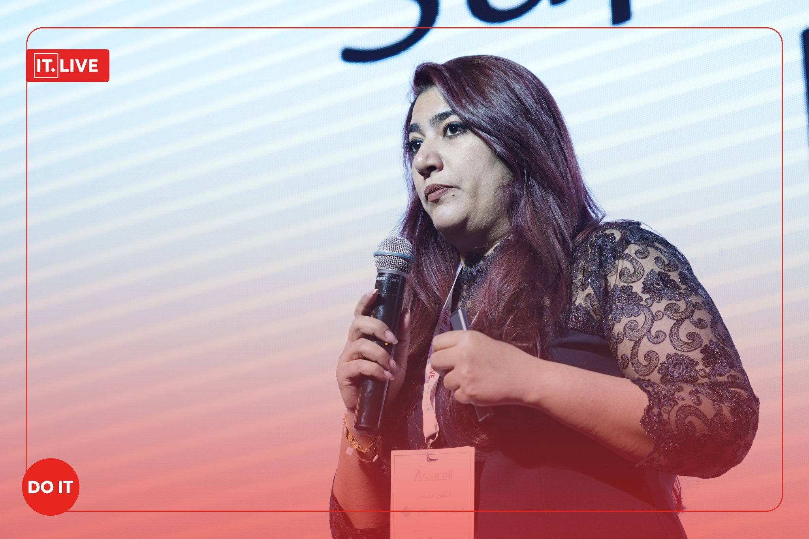

A member of Faculity of Electrical Engineering Technical Colleage- Middle Technical University and CDC head of the same colleage. With more that 10 years of experience in private and public sectors as an educator and a Human resources personnel. Sarah worked in diffrenct sectors such as Finance , Healthcare , Transportation and Education. Sarah had acquired her BSc. from UOT in Laser Engineering and her MSc. in Electrical engineering / Photonics. Florida Institute ofTechnology Alumni specialized in Optical fiber sensing systems. A member in IEEE OSA HKN and other associations. WTM ambassador and ArabWIC president.
 
